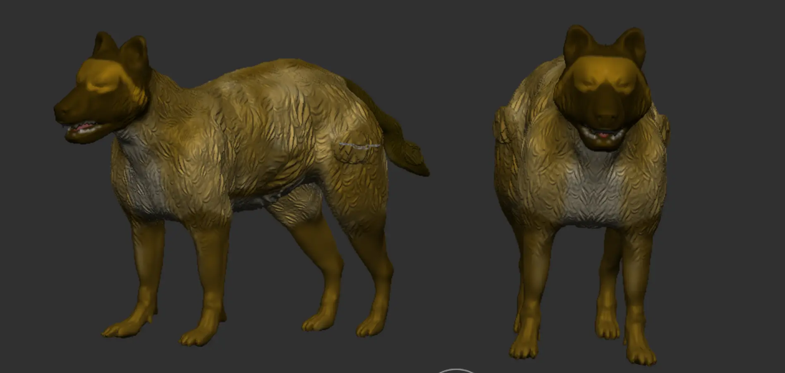
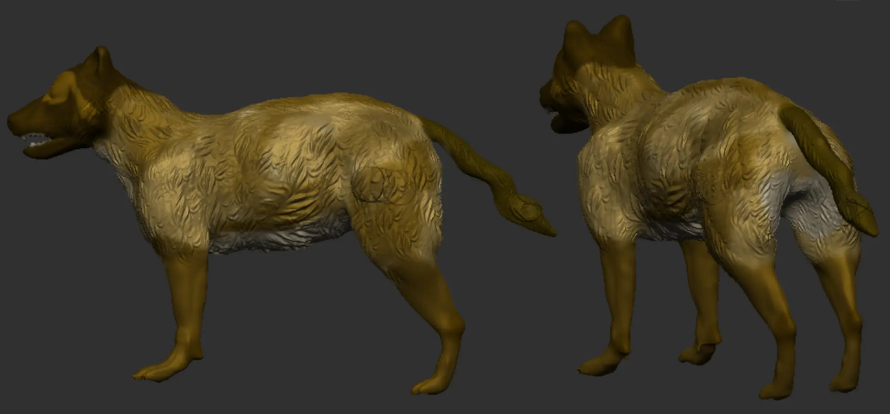
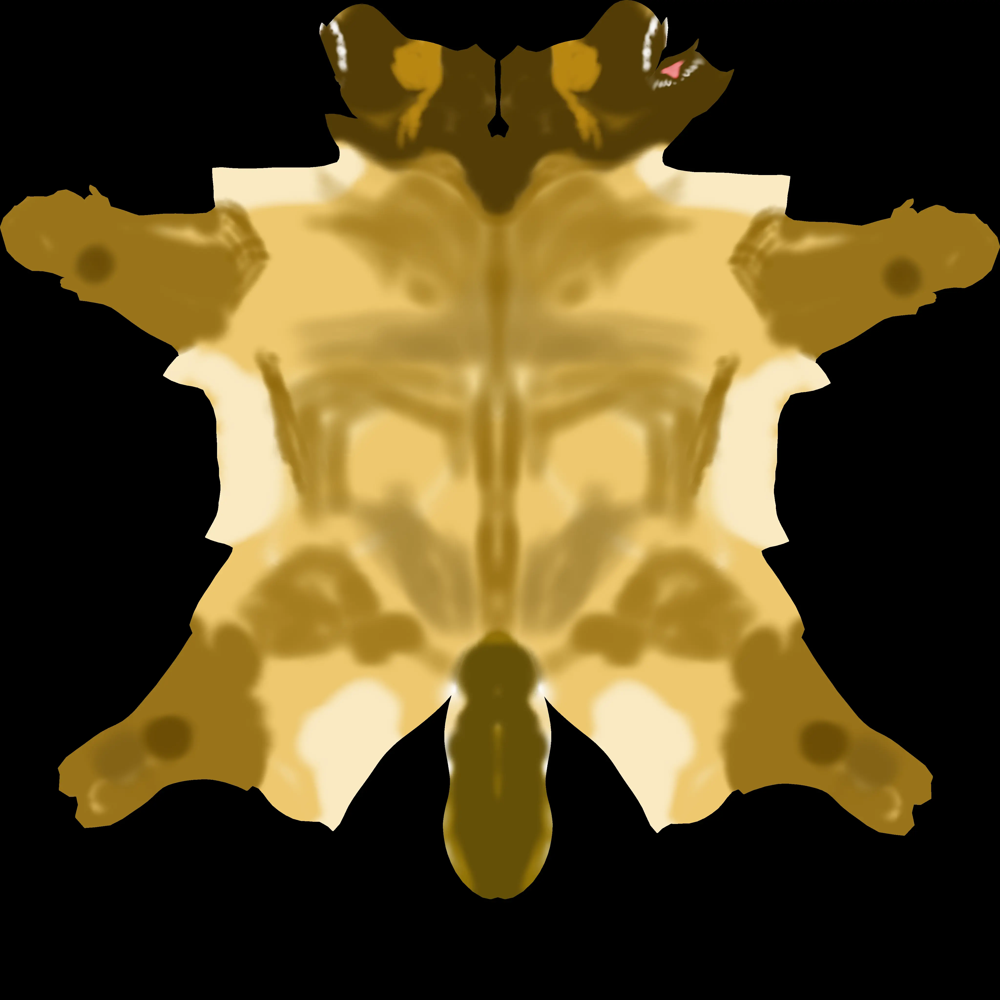

Project type:
Extinct Animal Sculpting project in Zbrush and Maya.
Project description:
For this project, I brought an extinct creature to life because this addresses some of the challenges sculptors face when they do not have complete reference. I selected any prehistoric or extinct animal as long as there is no known photographic evidence of the animal. I studied bones and muscles anatomy, artist interpretations, and looked at reference images in video games. I modeled the Wolf based on the dog model provided by Zbrush.
------------------
The main objective for this project is to get more comfortable with digital sculpting and painting. A second objective is to start learning the interface and sculpting tools within Zbrush.
Date:
February 10 - 23, 2025
Role:
3D Sculptor.
Project highlight:
Renders from different angles:


Texture:

Reference: